When you complete this learning material, you will be able to:
Describe water pre-treatment processes for ion removal.
You will specifically be able to complete the following tasks:
Explain the purpose, equipment, and operation of lime-soda softening.
Lime-soda softening involves the removal of scale-forming dissolved solids such as calcium and magnesium salts from water. Calcium hydroxide (lime) and sodium carbonate (soda) cause scale-forming materials to precipitate. A coagulant aid settling out precipitated material.
Lime, \( \text{Ca(OH)}_2 \) , converts bicarbonates of magnesium and calcium to insoluble carbonates which precipitate (come out of solution). The following chemical reactions illustrate this:
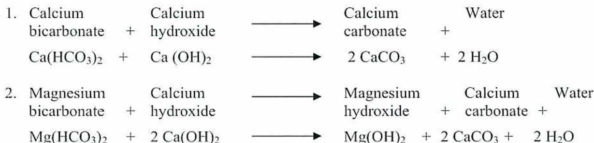
| 1. Calcium bicarbonate | + | Calcium hydroxide | \( \longrightarrow \) | Calcium carbonate | + | Water |
| \( \text{Ca(HCO}_3)_2 \) | + | \( \text{Ca(OH)}_2 \) | \( \longrightarrow \) | \( 2 \text{CaCO}_3 \) | + | \( 2 \text{H}_2\text{O} \) |
| 2. Magnesium bicarbonate | + | Calcium hydroxide | \( \longrightarrow \) | Magnesium hydroxide | + | Calcium carbonate + Water |
| \( \text{Mg(HCO}_3)_2 \) | + | \( 2 \text{Ca(OH)}_2 \) | \( \longrightarrow \) | \( \text{Mg(OH)}_2 \) | + | \( 2 \text{CaCO}_3 + 2 \text{H}_2\text{O} \) |
Other scale-forming compounds such as magnesium sulphate \( \text{MgSO}_4 \) magnesium chloride \( \text{MgCl}_2 \) , calcium sulphate \( \text{CaSO}_4 \) , and calcium chloride \( \text{CaCl}_2 \) are also removed by reacting with the calcium hydroxide or the sodium carbonate.
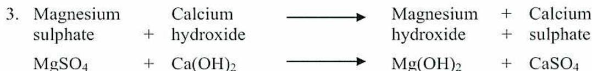
| 3. Magnesium sulphate | + | Calcium hydroxide | \( \longrightarrow \) | Magnesium hydroxide | + | Calcium sulphate |
| \( \text{MgSO}_4 \) | + | \( \text{Ca(OH)}_2 \) | \( \longrightarrow \) | \( \text{Mg(OH)}_2 \) | + | \( \text{CaSO}_4 \) |
In the above reaction the \( \text{Mg(OH)}_2 \) is insoluble and precipitates. The \( \text{CaSO}_4 \) is soluble and reacts with sodium carbonate forming insoluble calcium carbonate as follows.
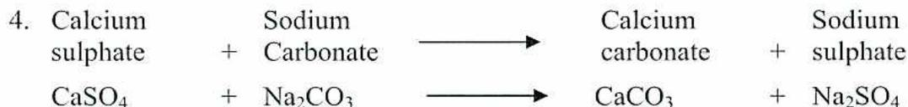
| 4. Calcium sulphate | + | Sodium Carbonate | \( \longrightarrow \) | Calcium carbonate | + | Sodium sulphate |
| \( \text{CaSO}_4 \) | + | \( \text{Na}_2\text{CO}_3 \) | \( \longrightarrow \) | \( \text{CaCO}_3 \) | + | \( \text{Na}_2\text{SO}_4 \) |
the slow mixing and floc formation area. As large floc form, they settle to the bottom and form part of the sludge blanket. The lighter particles recirculate back up into the rapid mixing zone. Calcium and magnesium precipitate as part of the sludge blanket. The effluent is filtered as it passes through the bed.
When the sludge bed is established, a clear separation is visible between the sludge bed and the clear water above. Polymers may be added to aid floc formation and increase outlet clarity. The rake at the bottom of the clarifier moves heavy floc to the blowdown cone located at the centre of the unit. Sludge from the cone is blown down to maintain the bed level. Bed level is also controlled by sludge bed conditioning, including chemical addition and mechanical agitation. The clarifier rake drive and the rapid mix turbine drive motors and gears are located at the top of the unit. The drives are variable speed allowing adjustment of the turbine and rake speeds. Speed adjustments are used to obtain the desired softening and clarity of the effluent. Often the effluent is routed through gravity filters downstream of the softener to remove any remaining floc.
The advantages of this process include:
As a result of these advantages, better water quality is produced than with batch processes. However, as there are many variables to control (such as bed level, turbine speed, rake speed, chemical feeds), it can be difficult to establish and maintain consistent operation.
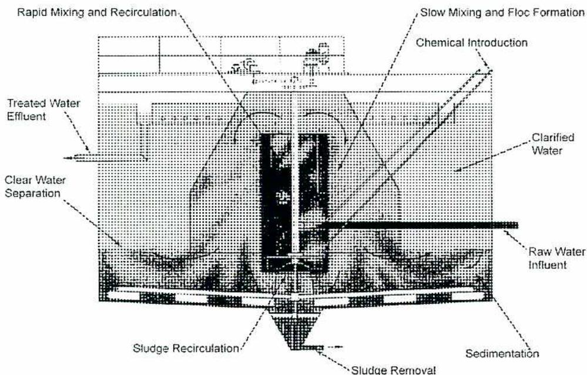
The diagram illustrates the internal structure and flow of a Sludge Contact Clarifier/Softener. At the top, a central vertical structure houses the 'Rapid Mixing and Recirculation' zone and the 'Slow Mixing and Floc Formation' zone. 'Chemical Introduction' is shown entering from the right into the upper section. 'Raw Water Influent' enters from the bottom right. 'Treated Water Effluent' is shown exiting from the top left. 'Clarified Water' is indicated in the upper right area. 'Clear Water Separation' is shown in the middle left. 'Sludge Recirculation' is indicated at the bottom center, leading to 'Sludge Removal' at the very bottom. 'Sedimentation' is labeled in the bottom right area.
Figure 1
Sludge Contact Clarifier/Softener
Deaeration of water in the hot lime-soda process occurs because the water is heated to a temperature close to the saturation temperature that corresponds to the pressure in the vessel. This causes O 2 , CO 2 , and other dissolved gases, with some steam, to be released from the water. These gases, along with the generated steam, pass upward through the vent condenser where most of the steam is re-condensed and returned to the vessel with the inlet water stream. The non-condensable gases and a small amount of steam are vented to atmosphere.
Although the hot process lime-soda softener is more efficient than the cold process type, hardness levels of approximately 10 to 30 ppm remain. When further hardness reductions are required, other forms of softening are added downstream of the lime-soda process. Options include ion exchange and membrane processes.
Explain the purpose, equipment, operation, and limitations of hot process phosphate softening.
Using a hot phosphate softener in conjunction with a hot lime softener, water of near zero hardness is produced. The chemicals used in the hot phosphate process are sodium hydroxide, NaOH, and trisodium phosphate Na 3 PO 4 . Calcium hardness is precipitated as tricalcium phosphate that is even more insoluble than the calcium carbonate precipitated in the lime-soda process. Magnesium hardness is precipitated as magnesium hydroxide.
The softening reactions are as follows:
| 1. Calcium bicarbonate | + | Sodium hydroxide | ⟶ | Calcium carbonate | + | Sodium Carbonate | + | Water |
| \( 3 \text{ Ca}(\text{HCO}_3)_2 \) | + | \( 6 \text{ NaOH} \) | ⟶ | \( 3 \text{ CaCO}_3 \) | + | \( 3 \text{ Na}_2\text{CO}_3 \) | + | \( 6 \text{ H}_2\text{O} \) |
| 2. Calcium carbonate | + | Trisodium phosphate | ⟶ | Tricalcium phosphate | + | Sodium carbonate | ||
| \( 3 \text{ CaCO}_3 \) | + | \( 2 \text{ Na}_3\text{PO}_4 \) | ⟶ | \( \text{Ca}_3(\text{PO}_4)_2 \) | + | \( 3 \text{ Na}_2\text{CO}_3 \) | ||
| 3. Magnesium bicarbonate | + | Sodium hydroxide | ⟶ | Magnesium hydroxide | + | Sodium carbonate | + | Water |
| \( \text{Mg}(\text{HCO}_3)_2 \) | + | \( 4 \text{ NaOH} \) | ⟶ | \( \text{Mg}(\text{OH})_2 \) | + | \( 2 \text{ Na}_2\text{CO}_3 \) | + | \( 2 \text{ H}_2\text{O} \) |
| 4. Calcium sulphate | + | Trisodium phosphate | ⟶ | Tricalcium phosphate | + | Sodium sulphate | ||
| \( 3 \text{ CaSO}_4 \) | + | \( 2 \text{ Na}_3\text{PO}_4 \) | ⟶ | \( \text{Ca}_3(\text{PO}_4)_2 \) | + | \( 3 \text{ Na}_2\text{SO}_4 \) | ||
| 5. Magnesium chloride | + | Sodium hydroxide | ⟶ | Magnesium hydroxide | + | Sodium chloride | ||
| \( \text{MgCl}_2 \) | + | \( 2 \text{ NaOH} \) | ⟶ | \( \text{Mg}(\text{OH})_2 \) | + | \( 2 \text{ NaCl} \) |
As with the lime-soda process, the hot phosphate process removes silica from the water
The cutaway view in Fig. 4 shows the internal parts of a downflow softener. This softener has a float box and regulating valve to control the water level. Also shown are the vacuum breaker and safety valves. Wash water connections are used for cleaning while the softener is in service.
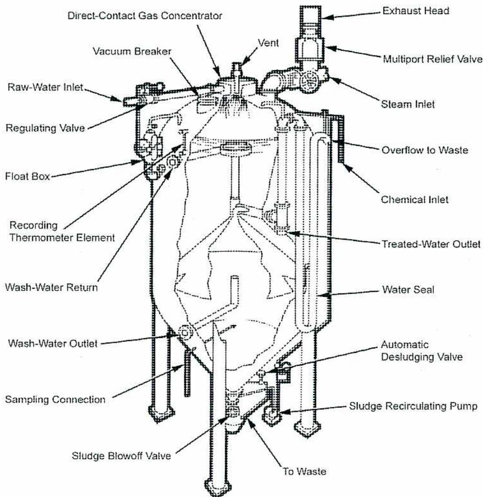
A detailed cutaway diagram of a hot process softener, showing its internal mechanical structure and various external connections. The diagram is labeled with the following components:
Figure 4
Cutaway View of a Hot Process Softener
If the process of precipitation softening is applied with regard to raw water quality, there are few limitations. Operation problems are often encountered because of failure to control the operating variables such as temperature, flow and chemical additions.
Temperature variations of more than 4°C may cause carry-over out of cold or warm process units. In hot process units, poorly operating inlet sprays reduce the temperature
Explain the purpose, equipment, operation, and limitations of sodium zeolite softening.
The sodium ion exchanger, often called the sodium zeolite softener, uses the principle of ion exchange to convert scale-forming compounds in the water to non-scale-forming compounds. The softener contains an ion-exchange material called zeolite that can convert scale-forming calcium and magnesium compounds to non-scale-forming sodium compounds. This conversion is accomplished with ion exchange. The zeolite ion-exchange material removes the Ca and Mg cations from the water and replaces them with Na cations. The Ca and Mg cations are held by the zeolite, which gives up Na cations in exchange for Ca and Mg cations.
When the zeolite material gives up all its Na cations the zeolite is termed “exhausted.” The softener is taken out of service and backwashed using control valves. A softener using control valves to control the regeneration is shown in Fig. 5. Raw water enters at the bottom and flows upward through the bed. It flows to waste via the wash water collector. Backwashing separates and cleans the bed, removing any suspended solids that may have become trapped on the bed surface. Brine is pumped through the vessel to regenerate the zeolite resin. This is accomplished by admitting raw water to an ejector or eductor. The water flows through the eductor producing a vacuum and drawing the brine up from the regenerant tank. The brine enters the softener above the surface of the zeolite bed through the regenerant distributor lateral at a slow, steady rate of flow. This is called the injection cycle of the regeneration. The brine solution flows down through the bed and sodium is exchanged for the calcium and magnesium ions. These ions exit the softener as calcium chloride and magnesium chloride and are discharged to waste.
After the exchange cycle, the softener is rinsed with raw water that is admitted to the top of the softener through the inlet distributor lateral. This water passes down through the bed, rinsing it free of brine and flowing out the drain to waste. The rinse cycle consists of two important steps. The first step is a slow rinse that is done at a low flow rate to displace the brine completely from the zeolite bed. This allows the bed to fill completely with clean water and eliminates the possibility of water “channeling” through the bed. The slow rinse occurs over a specified time that is determined by the bed type and vessel size. Once it is completed, the flow rate is increased to begin the fast rinse. The fast rinse removes the remaining brine and residual hardness from the bed. This is done at a high flow rate so that the bed is re-compacted. After the bed has been completely rinsed of brine, and the outlet water hardness is down to normal operating levels, the softener is returned to service.
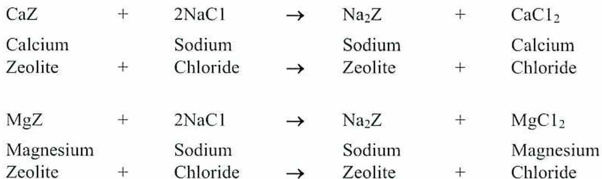
| CaZ | + | 2NaCl | → | Na 2 Z | + | CaCl 2 |
| Calcium | Sodium | Sodium | Calcium | |||
| Zeolite | + | Chloride | → | Zeolite | + | Chloride |
| MgZ | + | 2NaCl | → | Na 2 Z | + | MgCl 2 |
| Magnesium | Sodium | Sodium | Magnesium | |||
| Zeolite | + | Chloride | → | Zeolite | + | Chloride |
Fig. 6 shows, in more detail, the piping connections for a zeolite softener. A zeolite softener often has a master valve that connects the necessary piping for the various operations. In Fig. 6, the softener has air operated control valves for controlling the regeneration steps. The timers that control the valves are often located on a field panel. A PLC can also be used to control the regeneration steps.
![A detailed schematic diagram of a zeolite water softener tank and its piping system. The tank is a vertical cylindrical vessel containing a bed of sodium zeolite resin supported by an underdrain. Piping connections include: a 'Vent' at the top; an 'Inlet distributor' at the top left; a 'Regenerant inlet' at the top center; a 'Normal inlet valve' on the left side; a 'Backwash outlet' on the lower left; a 'Backwash inlet valve' and 'Slow water inlet' at the bottom left; a 'Fence outlet valve' at the bottom center; a 'Normal outlet valve' at the bottom right; and a 'Rinse and regenerant outlet' and 'Softened-water outlet' on the right side. Internal components labeled include 'Regenerant distributor laterals' and 'Sodium zeolite resin'.](d0abac95583b52a3b35f74a215567334_img.jpg)
Figure 6
Zeolite Softener Details
Explain the purpose, equipment, and operation of hydrogen zeolite softening.
In the sodium cation exchange softener the calcium and magnesium salts are replaced with salts of sodium. While this method removes the scale-forming calcium and magnesium, it does not reduce the total amount of salts dissolved in the water. The sodium salts take the place of the calcium and magnesium salts. One of the sodium salts, sodium bicarbonate, decomposes in the boiler and forms sodium carbonate, sodium hydroxide, and carbon dioxide. The sodium hydroxide may cause embrittlement of the boiler metal. The carbon dioxide is carried over with the steam and forms carbonic acid in the return lines, causing corrosion. Sodium bicarbonate tends to cause the boiler water to foam.
A hydrogen zeolite softener is used to remove the scale-forming salts without the formation of sodium bicarbonate. The material used in the hydrogen zeolite softener may be zeolite or synthetic cation resin. The ion-exchange process removes calcium, magnesium, and sodium cations from the mineral salts and replaces them with hydrogen ions. As a result, the mineral salts are converted to acids. These acids are subsequently neutralized with an alkali or base such as caustic soda (NaOH). In some cases, the effluent water that contains acid from the hydrogen zeolite softener is mixed with the water from a sodium zeolite softener. This also causes the neutralization of the acids.
The chemical reactions of hydrogen cation exchange are as follows:
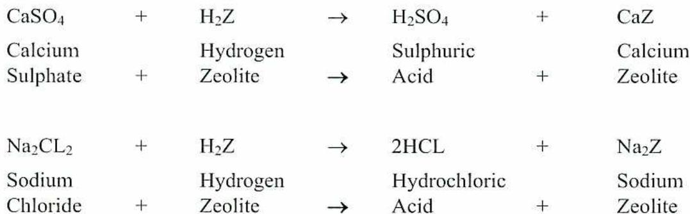
| \( \text{CaSO}_4 \) | + | \( \text{H}_2\text{Z} \) | \( \rightarrow \) | \( \text{H}_2\text{SO}_4 \) | + | \( \text{CaZ} \) |
| Calcium | Hydrogen | Sulphuric | Calcium | |||
| Sulphate | + | Zeolite | \( \rightarrow \) | Acid | + | Zeolite |
| \( \text{Na}_2\text{Cl}_2 \) | + | \( \text{H}_2\text{Z} \) | \( \rightarrow \) | \( 2\text{HCl} \) | + | \( \text{Na}_2\text{Z} \) |
| Sodium | Hydrogen | Hydrochloric | Sodium | |||
| Chloride | + | Zeolite | \( \rightarrow \) | Acid | + | Zeolite |
The acid-handling equipment is more complicated than the brine-handling equipment of the sodium cycle units. Acid is much more corrosive and hazardous (than brine) to the operators and maintenance personnel. Normally concentrated sulphuric acid is used. Its concentration is reduced to 2% and 4% acid for regenerating the resin. The acid is more corrosive when diluted than when it is in a concentrated form.
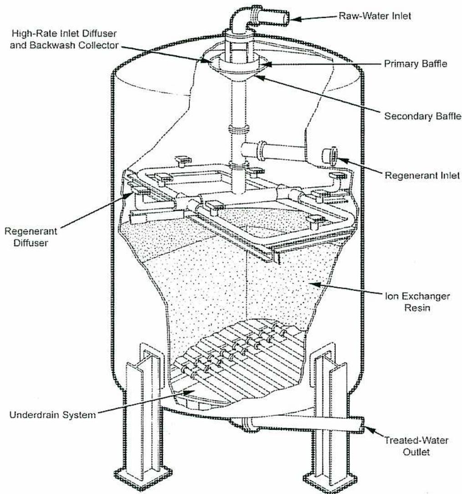
A detailed cross-sectional diagram of a cation exchange tank. The tank is cylindrical with a conical bottom. At the top center, a 'Raw-Water Inlet' pipe enters and connects to a 'High-Rate Inlet Diffuser and Backwash Collector'. This collector is positioned above a 'Primary Baffle' and a 'Secondary Baffle'. On the right side of the tank, a 'Regenerant Inlet' pipe enters and connects to a 'Regenerant Diffuser' located above the 'Ion Exchanger Resin' bed. The resin bed is shown as a stippled area. At the bottom of the tank, an 'Underdrain System' is depicted. At the bottom right, a 'Treated-Water Outlet' pipe exits the tank.
Figure 7
Cation Internals
Describe how silica is removed from water.
Silicon is found in most rocks and soils. It is the second most common element on the earth's crust after oxygen. It is commonly found in combination with oxygen to form silicon dioxide, ( \( \text{SiO}_2 \) ) or sand. Most natural waters contain some silica. Because silica has a low solubility level, certain conditions favour leaching of silica into water sources. These conditions are:
As a general rule well waters contain more silica than surface waters. Areas that have had volcanic activity in the past can have high silica levels.
Silica is a weakly ionized ion that receives a lot of attention in water treatment for a number of reasons. In power boiler applications, silica scaling is a constant concern for plant operations. Failure to maintain low silica levels in otherwise ultrapure boiler feedwater will result in silica being vapourized in the steam that is produced. When the steam's heat energy is expended in downstream equipment, such as heat exchangers and turbines, the silica will be re-condensed and will form very hard, tenacious deposits. These deposits will reduce heat transfer rates in heat exchangers, and reduce the clearances between blades and diaphragms in turbines. The deposition can be very difficult to remove. In addition, high silica levels in the boiler feedwater reduce cycles of concentration and the efficiency of plant operations.
Colloidal Silica is composed of very fine solid particles, typically between 0.1 and 0.001 microns in diameter, which can be suspended in water. Colloidal silica does not settle or filter out with conventional filtration. It is non-ionic and is often called nonreactive silica. Because it is non-ionic, it is not removed by ion exchange. Additionally, colloidal silica will not react with water testing chemicals, and so it cannot be detected by simple water testing procedures. It requires sophisticated laboratory equipment for it to be detected. It is essential to remove colloidal silica from water used in high-pressure boiler operations for the same reasons that ionized silica must be removed.
Explain the purpose, equipment, and operation, of demineralization, including condensate polishing.
In water treatment, demineralization refers to the removal of all mineral salts using ion exchangers. A demineralization system is an arrangement of cation and anion exchange beds. They are usually in series as in Fig. 9, with water passing through the cation and then the anion. Upon leaving the system, the water has had all cations replaced with hydrogen ions (H + ) and all anions replaced with hydroxyl (OH - ) ions. The effluent water is virtually free of dissolved minerals.
There are many demineralization arrangements in use. Normally composed of multiple exchangers, they are designed according to:
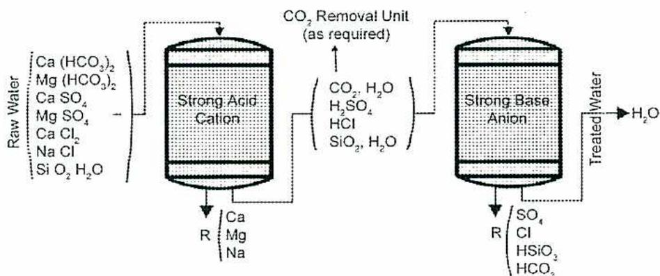
The diagram (Figure 9) shows the flow of water through a demineralization system.
1.
Raw Water
enters the first vessel, a
Strong Acid Cation
exchanger. The raw water contains: Ca(HCO
3
)
2
, Mg(HCO
3
)
2
, CaSO
4
, MgSO
4
, CaCl
2
, NaCl, and SiO
2
, H
2
O.
2. The effluent from the cation exchanger contains H
2
SO
4
, HCl, H
2
CO
3
(shown as CO
2
, H
2
O), and SiO
2
, H
2
O. The resin (R) in this tank captures Ca, Mg, and Na.
3. This effluent enters a
CO
2
Removal Unit (as required)
where CO
2
is vented out the top.
4. The water then enters the
Strong Base Anion
exchanger. The resin (R) in this tank captures SO
4
, Cl, HSiO
3
, and HCO
3
.
5. The final output is
Treated Water
, which is pure H
2
O.
Figure 9
Cation Anion with Degasifier
As shown in Fig. 10, not all demineralization systems consist of one cation exchanger (cation unit) and one anion exchanger (anion unit). Combinations of units are used to achieve the desired water quality. In all the arrangements, anion exchangers follow cation exchangers. In larger systems, it is also common to have more than one of each type of exchanger. For example, a high capacity demineralization system may include seven cation exchangers, six anion exchangers, and five mixed bed exchangers. Such an arrangement allows individual exchangers to be removed from service for regeneration without interrupting system production.
Some systems include both weak and strong cation exchangers that require more equipment but have lower chemical costs than a single strong cation unit. The reason for this is that a weak cation exchanger has higher regeneration efficiency and requires a lower concentration of acid regenerant. If it precedes the strong acid cation exchanger, it removes most of the calcium and magnesium ions from the water and only the few that are left are removed in the strong cation exchanger. Therefore, the strong cation exchanger requires less frequent regenerations with a corresponding saving in chemical costs. Although the weak cation exchanger requires a weaker acid for regeneration, it is often less expensive to purchase the same regeneration chemical for both cation exchangers, thereby benefiting from larger volume purchases and reducing inventory costs. In some cases, weak and strong cation resins will be contained within the same vessel, with the less dense weak cation resin placed on top of the strong cation resin.
This also explains the use of weak anion and strong anion exchangers in the same system. Strong anion exchangers are required for silica removal, but are expensive to regenerate. Weak anion units remove most other anions and are cheaper to regenerate. When a weak anion exchanger precedes the strong anion exchanger fewer regenerations of the strong anion unit are required and chemical costs are reduced.
Some of the reactions in the cation exchangers produce carbonic acid. Strong anion exchangers will remove carbonic acid downstream of the cation units, but weak anion exchangers will not. If allowed to remain in the water, carbonic acid will break down into carbon dioxide and water. The carbon dioxide will cause corrosion of downstream equipment if it is not removed.
At atmospheric pressure, carbonic acid is released as carbon dioxide. This principle allows for the carbon dioxide removal downstream of a cation exchanger. Refer to Fig. 10 for the location of decarbonators, or degasifiers, in various systems. Air is blown up through the degasifier to carry released carbon dioxide to the atmosphere. The water falls into a clearwell and is then pumped to the following exchanger. Fig. 11 shows a simple degasifier operating at atmospheric pressure. Water flows down over the slats or packing of the degasifier. A blower at the bottom of the unit provides the upward airflow. Fig. 12 illustrates how this degasifier fits into a demineralizer train between cation and anion exchangers.
![Schematic diagram of a demineralizer system with a degasifier. Raw water enters a Cation Exchanger from the top left. Acid Regenerant is added to the Cation Exchanger from the bottom left. The effluent from the Cation Exchanger flows into a De-Gasifier. A Cleanwell is connected to the bottom of the De-Gasifier. The effluent from the De-Gasifier flows into an Anion Exchanger. Caustic Soda Regenerant is added to the Anion Exchanger from the bottom right. The final treated water flows out of the Anion Exchanger to the service.](b230b8f21d8e82d55c0d311c8c32ef73_img.jpg)
The diagram illustrates a three-stage water treatment process. 1. Raw Water enters the top of a Cation Exchanger . 2. Acid Regenerant is introduced into the side of the Cation Exchanger. 3. The water from the bottom of the Cation Exchanger flows into a De-Gasifier . 4. A Cleanwell is connected to the bottom of the De-Gasifier. 5. The water from the top of the De-Gasifier flows into an Anion Exchanger . 6. Caustic Soda Regenerant is introduced into the side of the Anion Exchanger. 7. The treated water exits from the bottom of the Anion Exchanger To Service .
Figure 12
Demineralizer System with Degasifier
Each ion exchanger in a demineralization system is regenerated when its resin becomes exhausted. The particular arrangement of any given installation and the established operating guidelines determine the specific procedures and parameters that govern regenerations. The following discussion is in general terms only, to provide a broad understanding of exchanger regeneration. The sequence of regeneration includes the following major steps, with common considerations for each step included.
Remove From Service: In some cases, an exchanger is removed from service and regeneration is initiated on a flow throughput (amount of water that has been treated) basis. After a preset amount of water has been treated, the unit is automatically regenerated even though the resin is not fully exhausted. More often, regeneration is initiated after an indication of “breakthrough” occurs. Breakthrough means that the resin is nearing exhaustion and untreated ions are carrying through the exchanger outlet.
Breakthrough is checked continuously by automatic test equipment or manually by the operator. Indications of breakthrough at the exchanger outlet vary with the type of exchanger. For example, weak acid cations show an increase in alkalinity and pH as the produced acid residuals drop. An alkalinity of 40 mg/l and/or a pH of 5.5 (or similar maxima) are the targets at which the unit is removed from service. Strong acid cations show a sharp drop in free mineral acidity and/or a rise in hardness. Strong anion exchangers show a sharp rise in conductivity and/or silica.
collector, while cation regenerant enters below the bed and leaves through the same collector. During normal operation, the anion and cation materials are mixed together. The anion and cation resins in Fig. 13 have been reclassified (separated) and are ready for regeneration.
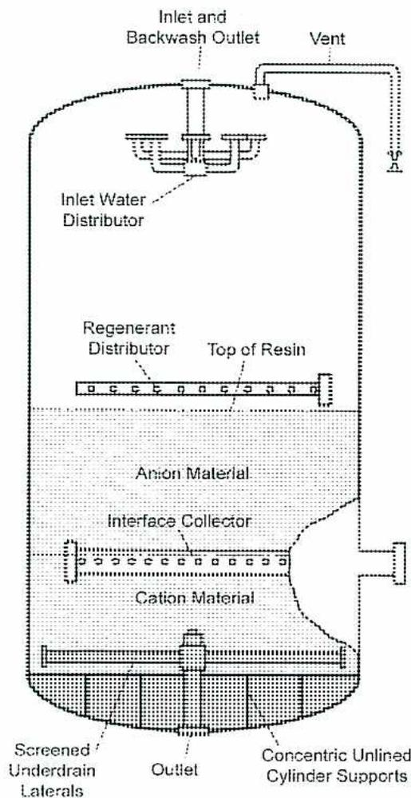
The diagram illustrates the internal structure of a mixed bed demineralizer tank. At the top, an 'Inlet and Backwash Outlet' pipe enters the tank and connects to an 'Inlet Water Distributor'. A 'Vent' pipe is located on the upper right side of the tank wall. Below the water distributor is a 'Regenerant Distributor'. The 'Top of Resin' is indicated by a horizontal line. The tank contains two distinct resin layers: 'Anion Material' in the upper section and 'Cation Material' in the lower section. An 'Interface Collector' is positioned at the boundary between the two resin layers. At the bottom of the tank, there are 'Screened Underdrain Laterals', an 'Outlet' pipe, and 'Concentric Unlined Cylinder Supports'.
Figure 13
Mixed Bed Demineralizer
Referring to Fig. 14, the regeneration of a mixed bed demineralizer is somewhat complex. Before regeneration begins, the mixed bed is backwashed. During backwash, the difference in the densities of the anion and cation resin beads allows them to separate naturally into distinct layers. The lower sight glass window allows the operator to check for a clear line of separation between the layers.
Following backwash, the cation resin is regenerated with acid using reverse flow from below the bed. The regenerant rises through the cation resin and exits to drain through the interface collector. The anion resin is then regenerated with caustic, which flows
polisher is 50-60 m 3 per hour per square metre of resin. A typical flow rate for makeup ion-exchange units is 15-17 m 3 per hour per square metre of resin.
The condensate polishers may be cation units or mixed bed polishers that have a bed of cation and anion resin. The cation units are regenerated with sodium, acid, or amines depending upon the application and the purity of the condensate required. When cation units are regenerated with sodium, the condensate outlet water contains higher levels of sodium. If sodium is not acceptable, the cation is regenerated with amines. Cation resin withstands condensate temperatures up to 130°C. Anion resin has a temperature limit of 60°C, so mixed beds must have the condensate cooled below 60°C.
Mixed beds are regenerated with sulphuric acid and caustic soda. They add no ions to the outlet water. Mixed beds are the same as the makeup mixed beds shown in Fig. 13. The main difference is the higher service flow rates. The regeneration sequence is the same. The fast rinse used at the end of cycle is continued until the quality of the effluent water is suitable for feedwater. When a mixed bed has been on standby for a period of time, it is rinsed again before being put in service.
Precoat filtration also uses ion-exchange resins. The resin is in a crushed or slurry form. The resin is used to coat individual screens or septums in a filter vessel as shown in Fig. 15. The powdered resin acts as a filtering medium that traps particulate matter. It also removes soluble ions by ion exchange. When the pressure drop on the filter reaches its maximum, the precoat material is disposed of. A new coat of powdered resin is used to coat the screens. Precoat filters are often used for cleaning up condensate after a boiler outage when there is a high level of iron in the condensate.
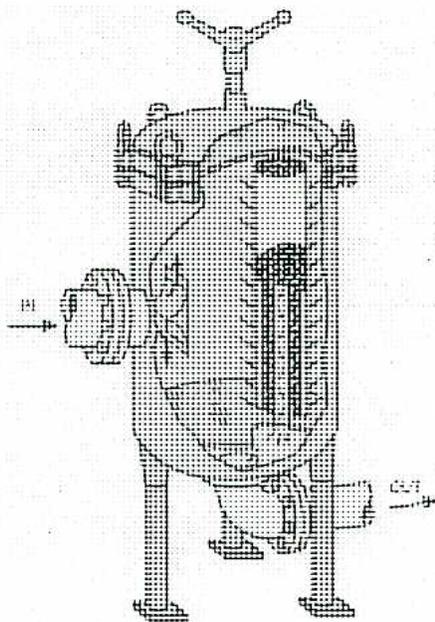
Figure 15
Precoat Polishing Filter
Explain the purpose, equipment, and operation of electrodialysis (ED) and electrodeionization (EDI).
The electrodialysis (ED) process incorporates ion-exchange membranes. ED is a process
in which solutions are desalted or concentrated electrically. Salts in water dissociate into positively and negatively charged ions. The key to the ED process is a semi-permeable barrier that allows passage of either positively charged ions (cations) or negatively charged ions (anions) while excluding passage of ions of the opposite charge. These semi-permeable barriers are known as ion-exchange, ion-selective or electrodialysis membranes.
Electrodialysis depends on the following general principles:
The dissolved ionic constituents in a saline solution such as \( \text{Na}^+ \) , \( \text{Ca}^{2+} \) , and \( \text{CO}_3^{2-} \) are dispersed in water effectively neutralizing their individual charges. When electrodes connected to an outside source of direct current such as a battery are placed in a container of saline water, electrical current is carried through the solution. The ions migrate to the electrode with the opposite charge. Fig. 16 shows how sodium and chloride ions pass through cation and anion membranes. The ions pass into the brine stream and the remaining water becomes the product.
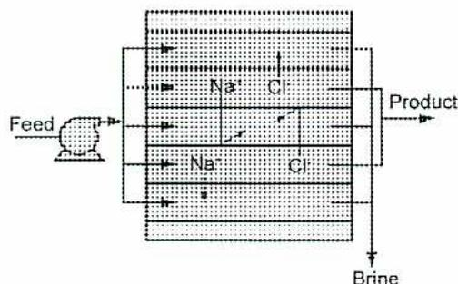
The diagram illustrates the operation of electrodialysis. A 'Feed' stream enters from the left into a series of alternating cation and anion membranes. The membranes are represented by vertical lines. Sodium ions ( \( \text{Na}^+ \) ) are shown migrating through cation membranes (indicated by arrows pointing right) into a central 'Brine' compartment. Chloride ions ( \( \text{Cl}^- \) ) are shown migrating through anion membranes (indicated by arrows pointing left) into the same 'Brine' compartment. The 'Product' stream, which is desalted water, exits from the right side of the membranes. The 'Brine' stream exits from the bottom of the central compartment.
Figure 16
ED Operation
desalted water and brine flowing from the stack. Depending on the design of the system, chemicals may be added to the streams in the stack to reduce the potential for scaling.
The raw feedwater must be pre-treated to prevent materials that could harm the membranes or clog the narrow channels in the cells from entering the membrane stack. The feedwater is circulated through the stack with a low-pressure pump with enough power to overcome the resistance of the water as it passes through the narrow passages. A rectifier is generally used to transform alternating current to the direct current supplied to the electrodes on the outside of the membrane stacks. Post-treatment consists of stabilizing the water and preparing it for distribution. This post-treatment may also include removing gases and adjusting the pH.
One of the problems in water desalination processes is that membranes and other active surfaces tend to become "fouled" or "scaled" by organic and inorganic substances in the water. The electrodialysis reversal (EDR) process overcomes this problem.
An EDR unit operates on the same general principle as a standard electrodialysis (ED) plant except that both the product and the brine channels are identical in construction. At intervals of several times an hour the polarity of the electrodes is reversed. The flows are simultaneously switched so that the brine channel becomes the product water channel, and the product water channel becomes the brine channel. The ions are attracted in the opposite direction across the membrane stack.
Immediately following the reversal of polarity and flow, some of the product water is dumped until the stack and lines are flushed out. The water quality returns after this flush. The flush takes about 1 or 2 minutes, and then the unit resumes producing water. The reversal process is useful in breaking up and flushing out scales, slimes and other deposits in the cells before they create a problem. Flushing allows the unit to operate with fewer pre-treatment chemicals, which minimizes membrane fouling.
Electrodialysis reversal units are often used to desalinate brackish water such as seawater. The major energy consumed in the process is direct current used to separate the ionic substances in the membrane stack.
Electro-Deionization, or EDI , is a process that evolved from conventional ion-exchange technology. EDI provides continuous demineralization at recovery rates of 90% or more. In EDI, just as in conventional ion exchange, cations and anions in the feedwater are exchanged for hydrogen and hydroxyl ions on the ion-exchange resins producing demineralized water. The key operational difference is that with EDI, the ion-exchange resin is regenerated continuously, while with conventional ion exchange chemical regeneration is performed intermittently.
An EDI system treats water at the “clean” end of a typical process. Water treated using EDI is typically reverse osmosis product water. The main application of EDI equipment is in place of primary mixed beds. EDI equipment is used to polish small amounts of contaminants from a high quality water stream. EDI is not suited for removing large amounts of contaminants as seen by primary demineralizer trains or reverse osmosis systems. They are more suited for polishing water that has been partly purified by demineralizers or RO systems.
EDI equipment consists of an arrangement of stacks on a modular frame. An EDI stack has multiple beds of ion-exchange material sandwiched between membrane walls. The stack is contained between two electrodes. The two electrodes are located at opposite ends of the stack as seen in Fig. 19. The electrodes supply electric current to water flowing inside the cells. One of these electrodes is the cathode. It is negatively charged and is a source of electrons. The cathode attracts cations (positively charged ions).
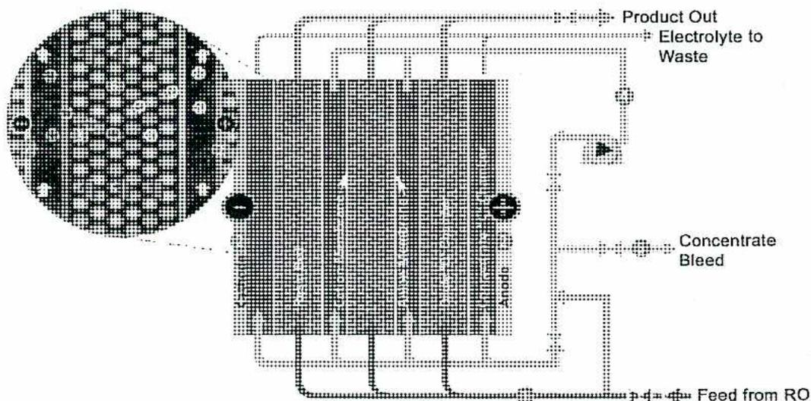
The diagram illustrates the internal structure and external piping of an EDI stack. On the left, a circular inset provides a cross-sectional view of the stack's interior, showing alternating layers of ion-exchange material and membranes. The main rectangular part of the diagram shows the stack's external connections. At the bottom right, a line labeled 'Feed from RO' enters the stack. At the top right, three lines exit: 'Product Out' (the purified water), 'Electrolyte to Waste' (a waste stream), and 'Concentrate Bleed' (another waste stream). The stack is flanked by two electrodes: a cathode on the left (marked with a minus sign) and an anode on the right (marked with a plus sign). Arrows indicate the flow of water and electrolyte through the stack's internal channels.
Figure 19
EDI Stacks
The second electrode is the anode. This electrode is positively charged and attracts anions (negatively charged ions). This attraction occurs because opposite charges attract and like charges repel. A negatively charged cathode attracts positively charged ions, and a positively charged anode attracts negatively charged ions.
The EDI process is often employed in place of traditional mixed bed ion exchange. Typical systems have feedwater pre-treatment followed by Reverse Osmosis (RO) and EDI.
Explain the purpose, equipment and operation of reverse osmosis (RO).
When two solutions, one dilute and one concentrated, are separated by a semi-permeable membrane, the solvent (water) from the dilute solution diffuses through the membrane into the concentrated solution. This phenomenon is called osmosis. If pressure is applied to the concentrated solution, the solvent (water) diffuses through the membrane into the dilute solution. This phenomenon is called reverse osmosis . Osmosis and reverse osmosis are illustrated in Fig. 21.
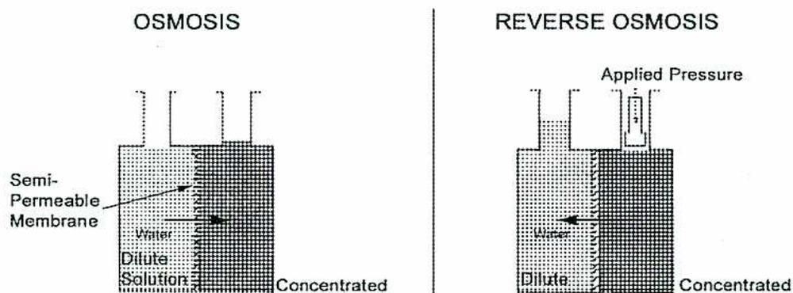
The diagram is divided into two side-by-side panels. The left panel, titled 'OSMOSIS', shows a U-shaped tube separated by a 'Semi-Permeable Membrane'. The left side contains a 'Dilute Solution' and the right side contains a 'Concentrated' solution. Arrows labeled 'Water' show movement from the dilute side to the concentrated side. The liquid level is higher on the concentrated side. The right panel, titled 'REVERSE OSMOSIS', shows the same setup but with 'Applied Pressure' indicated by a downward arrow on the concentrated side. Arrows labeled 'Water' show movement from the concentrated side to the dilute side. The liquid level is higher on the dilute side.
Figure 21
Osmosis and Reverse Osmosis
The reverse osmosis principle is applied to water treatment for water purification. As the water is forced to diffuse through the membrane, the impurities, including the dissolved solids contained in the water, are left behind as reject water or concentrate. The product or permeate water is very pure. RO is a membrane separation process. Basic reverse osmosis terms are shown in Fig. 22.
No heating or phase change is necessary for the RO separation. The energy required for desalting is for pressurizing the feedwater. Reverse osmosis systems vary in size from the single membrane types used for tap water to large plants used to desalinate seawater. Reverse osmosis water treatment plants for boiler makeup are made up of a number of membrane modules through which the water passes in parallel and or series. Feedwater is pumped into a closed vessel where it is pressurized against the membrane. As a portion of the water passes through the membrane, the remaining feedwater increases in salt concentration. At the same time, a portion of this feedwater is discharged without passing through the membrane.
Pre-treatment is important in RO because the feedwater must pass through very narrow passages during the process. Suspended solids must be removed and the water pre-treated so that salt precipitation or microorganism growth does not occur on the membranes. Usually the pre-treatment consists of fine filtration and the addition of acid or other chemicals to inhibit precipitation. Sometimes a sodium zeolite softener is used upstream of the RO filters. The softener removes the calcium and magnesium hardness replacing them with sodium ions. The sodium does not foul or scale the membranes as the calcium and magnesium do.
![Diagram of a two-stage Reverse Osmosis (RO) system. The process starts with a 121 lps feed stream entering Dual Media Filters. Chlorine Injection is added to the feed. The filtered water enters RO I, which has a 75% recovery rate. RO I produces a concentrate stream (142 lps) sent to a Cooling Tower and a permeate stream (106 lps). Sulfuric Acid Injection is added to the permeate stream. The permeate then enters a Forced Draft Degasifier. The output of the degasifier enters RO II, which has an 80% recovery rate. Bisulfate Injection is added to the feed of RO II. RO II produces a final Permeate stream (85 lps) and an RO II Concentrate stream (21 lps) which is recirculated back to the inlet of RO I.](f4fdd410cdb84df81274da55721e56fb_img.jpg)
Figure 24
Water Flow Through RO System
Fig. 24 shows an RO system with two RO units in series. Pre-treatment chemicals are added and filtration is completed upstream of the first RO unit. The reject stream from the first unit is utilized in a cooling water system, while the reject water from the second unit is recirculated back to the system inlet. A degasifier is utilized between the two RO units, and the effluent leaving the degasifier has its pressure raised by a pump in order to provide the pressure needed in the second RO unit. Additional chemical addition is completed prior to the water entering the second unit. In this system, 85 litres per second of high purity water is produced from a feed stream of 121 litres/sec. The remaining concentrate goes to the cooling water system. The flow to the cooling tower is 142 minus 106, which is 36 litres/sec.
Two developments have helped to reduce the operating cost of RO plants: the development of membranes that can operate efficiently with lower pressures, and the use of energy recovery devices. The low-pressure membranes are widely used to desalt brackish water. The energy recovery devices are connected to the concentrate stream as it leaves the pressure vessel. The water in the concentrate stream loses only about 100 to 400 kPa relative to the applied pressure from the high-pressure pump. These energy
into the centre of the tube. The permeate is collected from the hollow centre of the fibre or tubes. The concentrate remains in the module housing on the outside of the tubes.
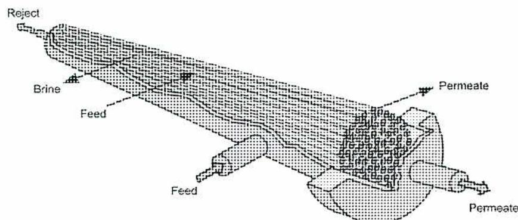
Figure 26
Hollow Fibre Membrane Construction
RO systems usually come packaged as skid mounted units. They look like the one in Fig. 27. They are normally tested at the factory and need only to have the piping and electrical and instrumentation hooked up at the plant site. They must have enough space for changing the membranes and for the operating and maintenance personnel to access the units. They are usually installed in at least pairs, so there is still one in operation as the other is being serviced. The skid assembly in Fig. 27 contains the high pressure pump as well as block valves and control valves.
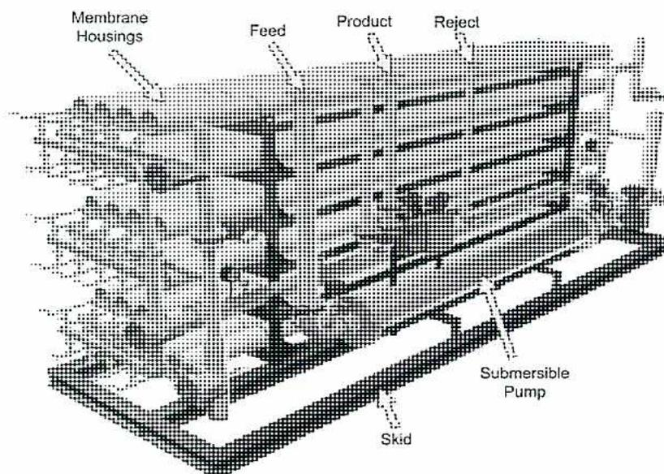
Figure 27
Skid Mounted RO Unit
A3.8
Explain the use of chemical deaeration in boiler water.
Mechanical deaerators reduce oxygen levels to parts per billion (ppb) levels. Mechanical deaeration is the most effective method of removing large amounts of oxygen from water. It is not cost effective to reduce large levels of oxygen by chemical means. At levels below 10 ppb, chemical oxygen scavengers are useful because they react chemically with the remaining oxygen. Deaerators are designed to produce water with dissolved oxygen levels of less than 7 ppb. Higher dissolved oxygen levels are often experienced during upsets and during startup and shutdown.
Internal treatment for oxygen involves the addition of a chemical to the boiler water, which reacts with the free oxygen and eliminates it from the water. The chemical is added upstream of the boiler, usually in the storage area of the deaerator. This protects the feedwater piping and the economizer from oxygen pitting. Typical oxygen pitting is illustrated in Fig. 3.
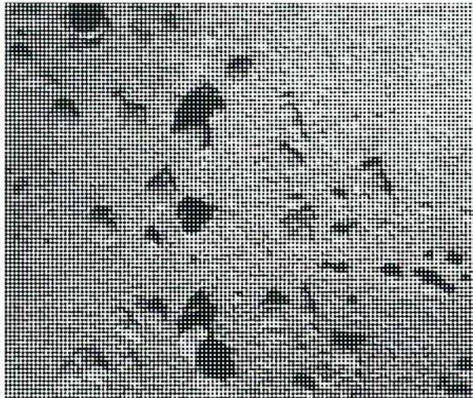
The image shows a close-up of a metal surface that has been severely corroded. Numerous small, dark, irregular pits of varying sizes are scattered across the entire visible area. The surface appears rough and textured due to these pits, which are characteristic of oxygen pitting corrosion in metal piping or components.
Figure 3
Oxygen Pitting of Metal
Elimin-ox is a trade name for Carbohydrazide. It is a safe to handle chemical that forms hydrazine at boiler temperatures. It has the advantages of hydrazine and is safer to handle.
Sur-Guard is an oxygen scavenger as well as a metal passivator. Sur-Guard is a trade name for erythorbic acid.
Selection of an oxygen scavenger depends upon the operating pressure of the system, as well as the amount of residual oxygen in the deaerator water. Sulphite is the only scavenger that will remove large quantities of oxygen. Hydrazine and the other organic scavengers are used for removing smaller (below 20-100 ppb) levels of oxygen and for passivation of the boiler metal surfaces. Often, a test of the boiler water shows a residual of the oxygen scavenger chemical. A free residual of scavenger is a reliable indication that no oxygen is present.
Metal passivation is the establishment of metal oxide layers through the use of reducing agents such as hydrazine. Because the oxide layers are formed with no oxygen present, removal of dissolved oxygen from the water promotes the reaction. Therefore, most oxygen scavengers remove oxygen from the water as well as promote metal passivation.
There are two types of iron oxide present in boiler water. The magnetite layer forms a protective barrier on the metal surface. The magnetite layer is 0.2 to 0.7 mm thick. It is formed by the reaction of water and iron in an environment free of oxygen.
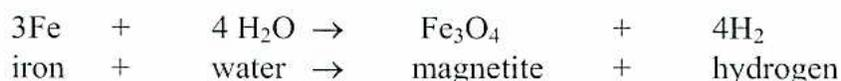
| 3Fe | + | 4 H 2 O | → | Fe 3 O 4 | + | 4H 2 |
| iron | + | water | → | magnetite | + | hydrogen |
The second type of iron oxide consists of corrosion products that enter the boiler in the feedwater. These oxides are both non-soluble and soluble and deposit on the magnetite layer. This layer is more porous and is easily penetrated by water.
Chemical oxygen scavengers are not used with oxygen treatments. These treatments are used on high-pressure once-through boilers. Oxygen treatment uses an addition of pure oxygen to form an oxide layer on the boiler metal. The water is deaerated to remove all gases, such as oxygen and CO 2 , before the molecular oxygen is added. A small amount of pure oxygen is added, usually between 50 and 150 ppb.
Explain the causes, effects, and control of carryover of boiler water.
Carryover can be defined as any solid, liquid, or gaseous contaminants that leave the boiler with the steam. The steam carries these contaminants out of the boiler steam drum.
Carryover does not apply to once-through boilers.
The term steam purity is often used in reference to carryover, such that steam with high purity contains very little carryover. It is virtually impossible to obtain zero carryover (that is, 100% pure steam), but carryover must be minimized due to its harmful effects on boiler and downstream equipment.
When boiler water carries over with the steam, it takes any dissolved or suspended solids contained in the water. The water contacts heating surfaces and deposits solids. Deposits may also be formed on other surfaces external to the boiler, such as in piping, valves and turbines. This creates problems in several key areas, as follows:
Chemical carryover can be prevented or minimized in the following ways:
Table 1
Sample Maximum Solids Guidelines
|
Operating Pressure
(kPa) |
Max. Boiler Water
Conductance ( \( \mu\text{mhos} \) ) |
|---|---|
| 0 - 2000 | 3500 |
| 2000 - 3000 | 3000 |
| 3000 - 4000 | 2500 |
| 4000 - 5000 | 2000 |
| 5000 - 6000 | 1500 |
| 6000 - 7000 | 1000 |
| 7000 - 10000 | 150 |
| 10000-14000 + | 100 |
Explain the use of blowdown from boiler water.
Boiler feedwater always contains a certain amount of impurities. Even ultrapure demineralized water still contains trace levels of calcium, magnesium, silica, and other impurities. Returning condensate also contains impurities. The water treatment chemicals also add to the level of solids in the boiler water.
When the boiler water is evaporating and producing steam, the impurities in the boiler water remain in the boiler water. The water in the form of steam exiting the boiler is very pure. It only contains solids that may be present because of carryover, any volatile elements such as silica, or chemicals such as amines. The overall result of pure water leaving the boiler, and impure water entering the boiler, is a steady increase in the level of solids in the boiler water. There is a limit to how concentrated the boiler water may become. This is based on the operating pressure of the boiler and the chemical treatment system being employed. To avoid exceeding the concentration limits, boiler water must be removed by blowdown. The blowdown is set so that the solids leaving the boiler equal those entering the boiler. Therefore, the concentration is maintained in the control range.
It is common for drum boilers to have separate blowdown points for different sections of the boiler. The continuous blowdown system is used to control the total dissolved solids in the boiler water. The other blowdown points are for areas such as mud drums or waterwall headers. They are operated intermittently to rid the boiler of any accumulated settled solids. These blowdown points are also used to drain sections of the boiler for repair or inspection. The intermittent blowdown points and the continuous blowdown point have separate piping into the blowdown tank. The piping is not interconnected, making it impossible to drain water from one section of the boiler to another.
Since the boiler water being blown down is at the steam saturation temperature for the operating pressure of the boiler, it contains considerable heat energy. More boiler blowdown produces greater heat losses resulting in lower thermal efficiency. Keeping boiler blowdown to the minimum value, while controlling the solids in the boiler, should be the goal of the steam plant operator.
In some cases, the manual blowdown may also be directed through the flash tank, in which case the flash tank must be designed to meet code requirements as a blowdown tank. However, because manual blowdown is short-duration and high-flow, it is usually directed to a normal blowdown tank.
The adjustment of continuous blowdown can be taken out of an operator's hands and controlled automatically. This provides for a very steady concentration of dissolved solids, even if feedwater quality changes during the day. It makes internal treatment programs much easier to control, and when combined with heat recovery, is by far the most efficient blowdown system. Fig. 5 shows the main components of an automatic blowdown system.
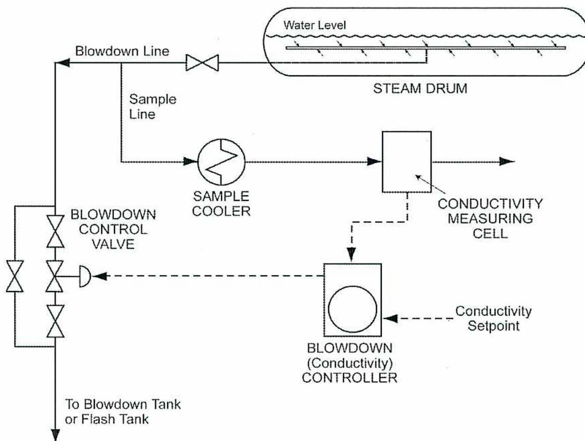
The diagram illustrates an automatic blowdown system for a steam drum. At the top, a horizontal steam drum is shown with a 'Water Level' indicator. A 'Blowdown Line' exits from the bottom of the drum, passing through a valve. A 'Sample Line' branches off from the blowdown line upstream of the valve and leads to a 'SAMPLE COOLER'. The cooled sample then enters a 'CONDUCTIVITY MEASURING CELL'. A dashed line connects the measuring cell to a 'BLOWDOWN (Conductivity) CONTROLLER'. The controller also receives a 'Conductivity Setpoint' input. A dashed line from the controller points to a 'BLOWDOWN CONTROL VALVE' located on the blowdown line. The blowdown line then splits into two paths, one of which is labeled 'To Blowdown Tank or Flash Tank'.
Figure 5
Automatic Blowdown System
The continuous blowdown line is fitted with a modulating control valve. A sample of boiler water is continuously drawn off upstream of the control valve, and sent through a sample cooler. It then enters a measuring cell where the conductivity of the water is continuously measured, and the output is transmitted to a conductivity controller.
Explain the use and control of chemical feed systems for boiler water.
Approximately 95% of boilers in operation today are supplied with chemicals by a continuous feed system. This involves feeding chemicals to the boiler system at the most efficient injection points and at a steady and continuous rate. Advantages of continuous feed include the following:
Fig. 6 shows an example of a typical continuous feed system using day tanks for each chemical. Common construction materials for chemical feed tanks are:
The tank material must be able to withstand the chemical solution in the tank.
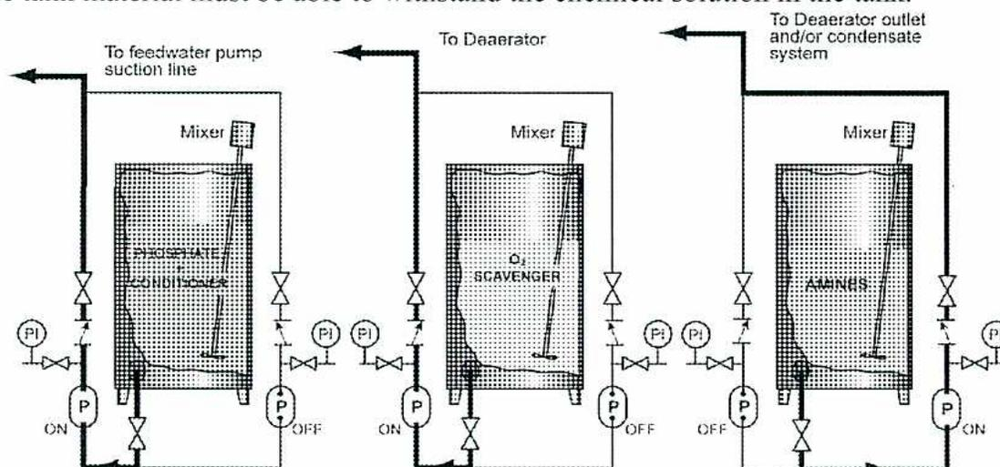
The diagram illustrates a continuous feed system with three separate day tanks, each containing a mixer. The tanks are labeled 'PHOSPHATE', 'O 2 SCAVENGER', and 'AMINES'. Each tank has an outlet line with a pump (P) and a control valve. The pumps are labeled 'ON' and 'OFF'. The outlet lines from the tanks are connected to a common header line. The header line has a pressure indicator (PI) and a control valve. The header line is connected to the 'To feedwater pump suction line' on the left and the 'To Deaerator' on the right. The 'To Deaerator' line is further connected to the 'To Deaerator outlet and/or condensate system' on the right.
Figure 6
Continuous Feed System with Day Tanks
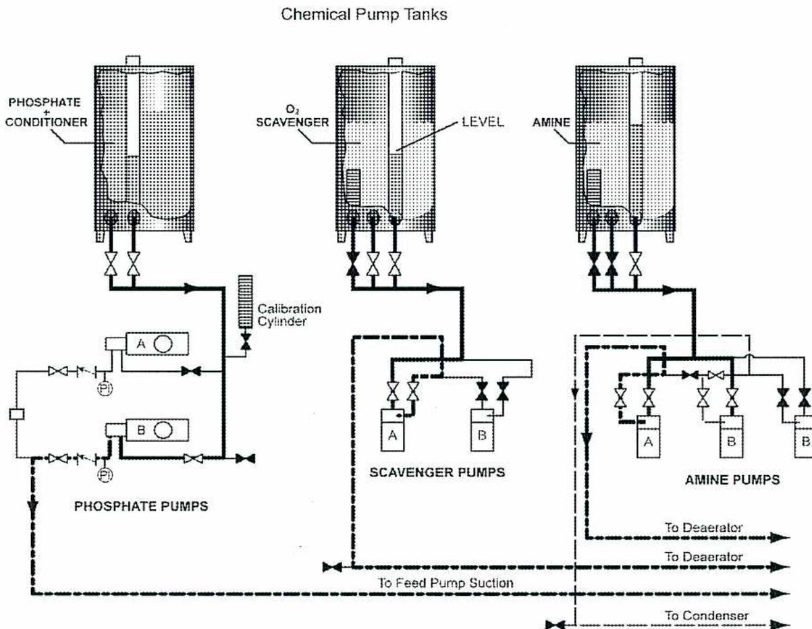
The diagram illustrates three chemical pump tanks: PHOSPHATE + CONDITIONER, O 2 SCAVENGER, and AMINE. Each tank is equipped with a level gauge. The PHOSPHATE + CONDITIONER tank is connected to two pumps labeled A and B, collectively labeled PHOSPHATE PUMPS. These pumps discharge into a Calibration Cylinder. The O 2 SCAVENGER tank is connected to two pumps labeled A and B, collectively labeled SCAVENGER PUMPS. The AMINE tank is connected to three pumps, two labeled A and one labeled B, collectively labeled AMINE PUMPS. All three sets of pumps discharge into a common piping system. This system includes a branch to the Feed Pump Suction, two branches to Deaerators, and one branch to a Condenser.
Figure 7
Continuous Feed with Pump Tanks
Each chemical is kept in a pump tank from which the pump takes direct suction. A gauge glass on the pump tank allows the operator to ensure there is always a level in the tank, and to initiate refilling the tank, when necessary, from a supply tank or truck. A remote level gauge may also be installed and connected to a control or computer system.
Depending on the complexity of the steam system being served, each tank has at least two pumps. Control is much improved since the operator need only adjust the pump flow, without also being concerned about chemical concentration. Differences in how the chemicals are mixed in day tanks are completely eliminated.
The two most common designs of chemical feed pumps are the reciprocating plunger-type and the electronic impulse-type. They both allow fine control of chemical flow.
Plunger pumps consist of one or more reciprocating plungers, driven by an electric motor through an adjustable control box, with the ability to change the length of the pump stroke. An adjustment knob on the pump control box has a graduated scale that
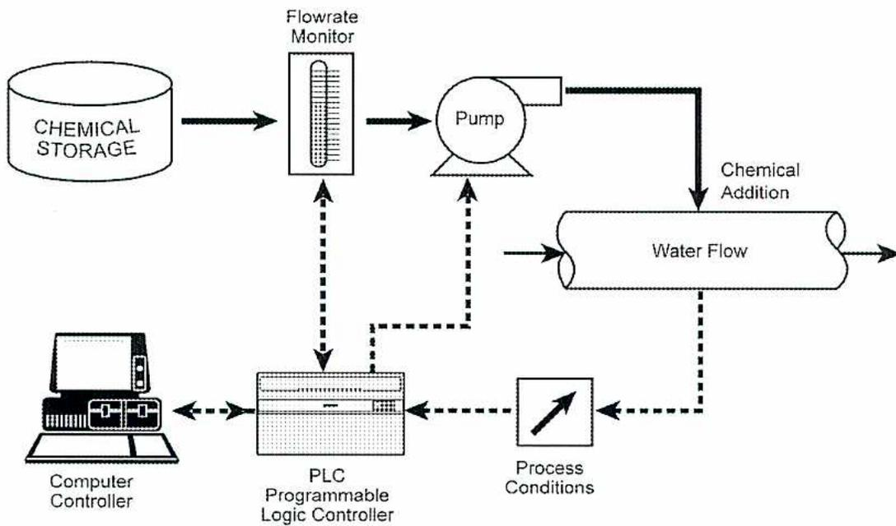
graph TD
CS[CHEMICAL STORAGE] --> FM[Flowrate Monitor]
FM --> P[Pump]
P --> CA[Chemical Addition]
CA --> WF[Water Flow]
WF -.-> PC[Process Conditions]
PC -.-> PLC[PLC Programmable Logic Controller]
PLC <--> CC[Computer Controller]
PLC -.-> FM
PLC -.-> P
Figure 8
Automated Control System
Explain the control of silica to avoid turbine blade deposits.
In general, turbine blade deposits are caused by poor quality steam. The deposits can form on steam nozzles and blading, distorting the original shape of the components. The surface of the deposits is not smooth but rough. Deposits increase the resistance to the flow of steam. The steam velocities and pressure drops are changed, reducing the output and efficiency of the turbine. Where there are excessive deposits, excessive rotor thrust may be seen. If the deposits are unevenly distributed on the rotor, the rotor may become unbalanced resulting in increased vibrations.
There are several causes of poor steam quality leading to turbine deposits.
The silica in the makeup water and in the returned steam condensate must be closely monitored. If silica does make it into the boiler water, the usual response is to increase the continuous blowdown and decrease the silica in the boiler water to the desired levels. The cause of the silica excursion must be found to eliminate further problems. Causes of extra silica in the boiler water include:
Removal of silica from the boiler feedwater is required to reduce the silica content in the boiler. This can be achieved through pre-treatment of feedwater in the following ways:
A3.9